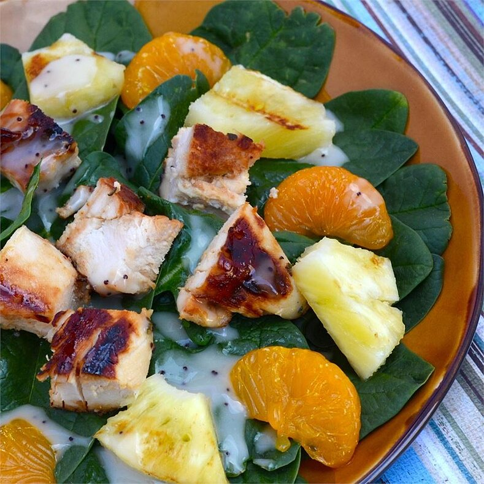

Grilled Pineapple Salad

Sweet and savory come together beautifully in this salad of marinated grilled chicken and pineapple on a healthy bed of baby spinach. We never have leftovers and everyone who eats it wants the recipe! Use fresh pineapple and rosemary; it makes the dish.
Ingredients
- 1 can or bottle beer
- 1/2 cup honey
- 1/3 cup Dijon mustard
- 2 tablespoons olive oil
- 1 tablespoon fresh rosemary, or more to taste
- 1 teaspoon garlic powder
- 1 teaspoon salt
- 1/8 teaspoon freshly cracked black pepper
- 2 pounds chicken breast tenderloins
- 1 fresh pineapple
- 1 bag babe spinach
- 1/4 cup pine nuts
- 1 can mandarin oranges
- 6 tablespoons poppy seed salad dressing, or to taste
Steps
- Mix beer, honey, Dijon mustard, olive oil, rosemary, garlic powder, salt, and black pepper in a large resealable plastic bag until thoroughly combined. Add chicken to the marinade, evenly coat, and squeeze air from the bag. Seal and refrigerate several hours to overnight, turning bag over occasionally.
- Preheat outdoor grill for medium-high heat and lightly oil the grate.
- Twist top from pineapple and cut peel off in long vertical strips. Cut pineapple into wedges vertically and cut the tough core from each wedge.
- Thread marinated chicken tenders onto skewers. Grill chicken and pineapple wedges on the preheated grill until chicken is no longer pink inside, chicken juices run clear, and pineapple wedges are tender and show light brown grill marks, 10 to 12 minutes. Cut chicken and pineapple into bite-sized pieces.
- Toss spinach with pine nuts and mandarin orange segments in a large bowl. Top salad with chicken and pineapple pieces. Serve on salad plates; drizzle each serving with 2 teaspoons poppy seed dressing.